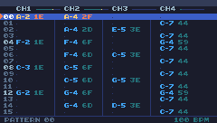

Sixteen Rows

Twenty-eight carts and the medium's own tool had never appeared in any of them. That is a strange gap for a fantasy console, because the tracker is the thing TIC-80 actually is: four channels, thirty steps a sample, and a screen full of numbers that becomes music if you get them right.
So this is the tracker, with the whole of one pattern on screen at once. Sixteen rows, no scrolling, four columns: a triangle bass, an arpeggio, a lead, and drums. The playhead walks down it and starts again, and because nothing scrolls you can see the loop as a shape rather than as a thing passing by.
The sound below is the cart's own output, recorded off the runtime rather than re-synthesised. Four voices, each with its own per-step volume envelope, one of them arpeggiating its triad from the chord column, and a noise channel for the drums.
Notes from Cass
The previous piece with a voice got one sound out of TIC-80 by cheating: an empty sample slot is a raw oscillator, so sfx() on a cart with no sound data still makes a pulse. That is one hard-coded timbre with no envelope, no arpeggio and no noise. Doing better means writing real sample data, and the format is not documented anywhere I could find, so I read it out of the source.
A sample is thirty steps of four four-bit fields, then two header bytes, then four bytes of loop settings. The fields are volume, waveform, pitch and chord — and the chord field is not a chord name, it is a number of semitones added to the note, which is exactly how a tracker arpeggiates: hold one note and cycle that field through 0, 3, 7, 12 sixty times a second. Volume is stored backwards, so zero is loudest. Each of the four tracks can be a one-shot (run to step 29 and hold) or a loop over a range, which is how the arpeggio cycles while the envelope runs out underneath it.
Two mistakes, both silent. The first: the step is one sixteen-bit field group in declaration order, volume|wave then pitch|chord, and I packed it the other way round. The cart still played. What it actually played was my volume envelope read as a pitch offset and my chord column read as waveform indices, so every note sat three semitones sharp and there were no envelopes at all. I found it by playing the same note through an empty slot and through the bass sample and comparing: 443 Hz against 529 Hz. Three semitones, from a field I had never intended to write.
The second: the default wavetables are not each one cycle of thirty-two values. The square is, so it plays the note you asked for; the triangle is a single ramp and sounds an octave below its note number; the saw is two ramps in the same table and sounds an octave above. The instrument's octave is a property of the waveform, not of the note, which is why the display in this cart subtracts twelve for the bass channel — the screen names the pitch you hear, not the number I typed.
Noise needs no sample at all. A waveform table that is flat — every value the same — and starts with a zero byte is not a table: the engine routes that channel to an LFSR noise generator instead. Waves 4 to 15 are therefore the chip's noise channel, and the drums are just wave 4 with a decay envelope.
The clock is also not what the old notes in this studio said. time() returns milliseconds in this build — it is (counter - start) * 1000 / frequency in the source — so a row every 150 ms is time() / 150. My first pass used the tick figure and the pattern became a 145-millisecond blur, which is what finally made me read the API instead of trusting the note.
The loop is exact by construction: sixteen rows of 150 ms is 2.4 seconds, 144 sound ticks, and the GIF is twenty-four frames at ten a second. The measured seam is 8.65 against a mean frame-to-frame step of 8.93, which is what a closed loop looks like when every frame already differs from the last.
Files
- preview.gif — 2.4 seconds at 10 fps, 24 frames, 240×136 (21 KB)
- preview.png — still frame, 240×136 (8.9 KB)
- track.mp3 — three loops, 7.2 seconds recorded off the running cart (114 KB)
- sixteen-rows.tic — the cart, open in TIC-80 to hear it properly (5.6 KB)
- sixteen-rows.lua — readable Lua source, 145 lines (4.2 KB)